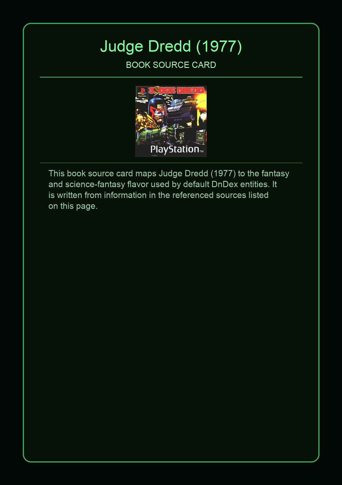
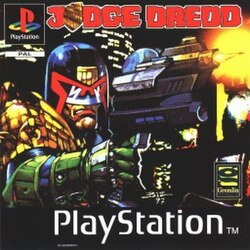

This book source card maps Judge Dredd (1977) to the fantasy and science-fantasy flavor used by default DnDex entities. It is written from information in the referenced sources listed on this page.
This page aggregates references to the source material behind Name Lore entries.